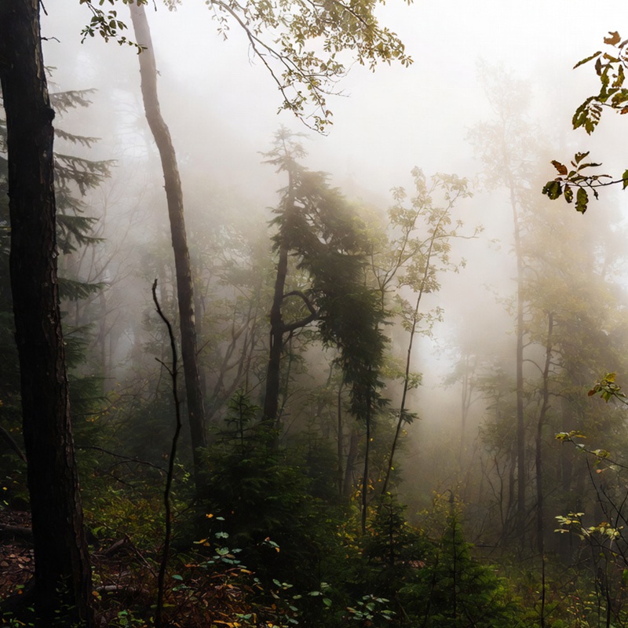
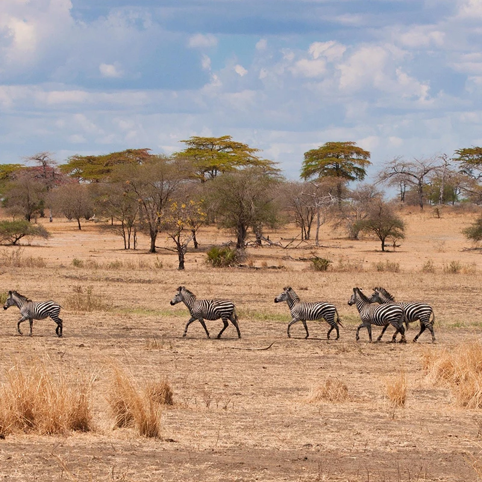
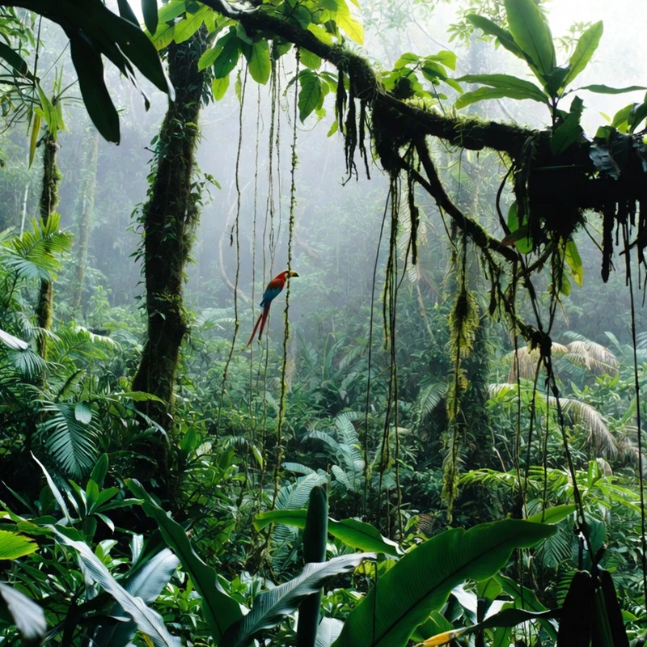
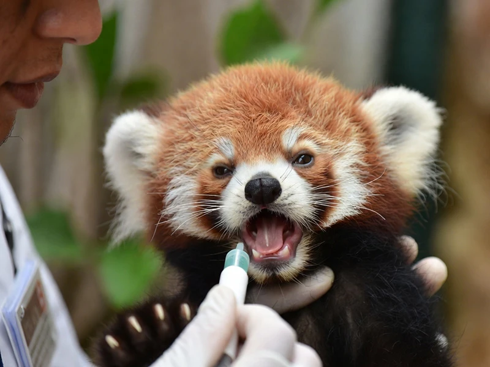
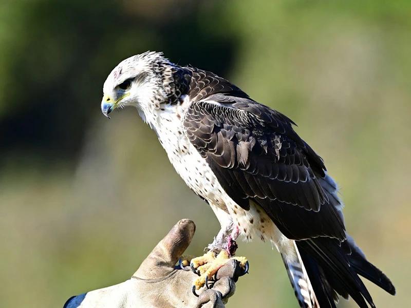

高山迷霧區
在森光動物園海拔高達 2500 公尺的雲霧森林裡，陽光穿透針葉林，形成迷幻的薄光，空氣轉而沁涼。這裡是小熊貓阿光的家，我們模擬喜馬拉雅山的涼爽氣候，讓您可以觀察這些紅褐色小熊貓在樹梢慵懶伸懶腰的姿態。在寧靜的霧氣與斑駁光影中，請放慢腳步，與我們一同守護這份隱藏在雲端裡的生命奇蹟。

金黃草原區
歡迎來到陽光眷顧的大地。森光動物園在這裡模擬非洲大草原的遼闊，琥珀色的光線灑落在起伏的草浪上。您可以看見斑馬優雅漫步於金合歡樹間，或是獅子在午後暖陽下打盹的姿態。這是一場關於速度與生命力的冒險，森光動物園邀請您在廣闊的視野中，感受萬獸之王最純粹的野性脈動。

翡翠雨林區
走入森光動物園濕潤的神祕叢林，這裡充滿了層次豐富的深綠意境。在高大繁茂的闊葉林中，陽光被過濾成點點碎光，映照著色彩斑斕的巨嘴鳥。您可以沿著蜿蜒的小徑，探索靈長類動物在樹冠層間跳躍的身影。這不僅是物種最豐富的棲息地，更是一場感官與綠意的深度洗禮，讓您沉浸在自然的繁盛與生機中。
小熊貓寶寶的餵食紀錄
這張照片捕捉到了「阿光」在育幼室最萌的一幕。為了確保小熊貓寶寶能健康成長，保育員每天都要化身「超級奶爸」，精準紀錄每一份營養補給。看著寶寶張開小嘴、渴望餵食管裡的營養補給，這份執著背後是整個醫療團隊的守護。
這不只是一次健康檢查，更是生命最初的信任交託。來到這裡，您將看見可愛外表下，最嚴謹的醫療照護故事，感受每一公克重量背後的生命意義。

環尾狐猴的深夜點心時間
當白天的熱鬧散去，園區轉入神祕的深夜模式。在聚光燈的洗禮下，環尾狐猴們正優雅地參與一場特殊的派對。這篇「深夜食堂」紀錄了保育員如何與這群夜空下的精靈互動。不同於白天的遠觀，夜晚的餵食更像是一場信任的對話。
透過這束溫暖的光影，我們希望能帶您看見動物園在黑暗中的溫暖守護。快跟著我們的文字，走入這個平時不對外開放、充滿魔幻氛圍的環尾狐猴祕境吧！

大鵟的野性回歸
在「沐光」的猛禽復健中心，我們紀錄了這隻大鵟（Buzzard）重拾尊嚴的歷程。初到園區時，牠因羽翼受傷而失去了翱翔天際的驕傲。經過三個月的精密醫療與漸進式的飛行訓練，今天，牠終於能穩穩地站在保育員的皮手套上，展現出那對銳利且充滿生命力的金黃瞳孔。
這不僅是一次成功的野放準備，更是我們對生命不屈意志的敬意。當牠下一次振翅高飛，將帶著所有人的祝福回歸群山。我們誠摯邀請您走入這段守護故事，看見動物園在觀光之外，更是一個讓折翼奇蹟重新飛翔的溫暖起點。
